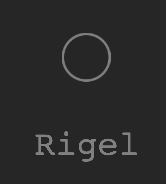
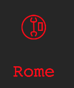
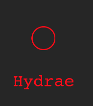

Planets
A planet can be owned by one of the 4 teams. In rare cases, a failed attempt to capture a planet may result in that planet having 0 armies and being “independent”. Independent planets appear gray. A planet that has not been visited by your team since the start of the game, or since the last time it was captured, will also appear gray.

A planet with extra repair facilities will show a wrench icon in the center. A planet with extra fuel will show a fuel can on the right side. Orbiting a friendly planet with these facilities will result in faster repair or refueling.

A planet may not have any special facilities:

You can use the l (lowercase L) command to “lock on” to a planet and, when you get there, orbit it. A planet with more than 4 armies will also show the army icon on its left side. When you orbit a friendly or enemy planet, you can bomb it (b), beam up armies (z) or beam down armies (x). Bombing is only effective when there are more than 4 enemy armies. The last few enemy armies have to be destroyed by beaming down armies. Bombing, followed by 5 armies, is generally sufficient to capture any enemy planet.
Enemy planets damage your ship if you are close to it.
feedback@networkmom.net